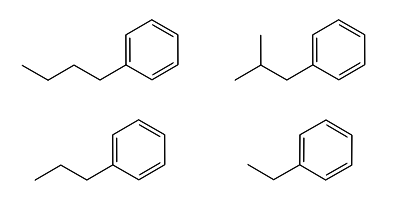

|
|
FEP Mapper Tutorial |
In this tutorial, you will set up an FEP calculation in which a ligand molecule is transformed into other ligand molecules by modification of a functional group, in the presence of a receptor. The receptor is an engineered version of the protein lysozyme containing an artificial non-polar cavity. The ligand is butyl benzene, and it is transformed to ethyl benzene, propyl benzene, and isobutyl benzene, to determine the relative binding free energies of these ligands. This is a system where ligand docking calculations often fail, since the complexes fall outside the narrow range of typical drug-like molecules binding to common targets that their scoring functions are trained on. The system represents a rather small receptor and simple ligands, chosen to make the tutorial simple and relatively fast.
It is assumed that you have access to a host with one or more GPU cards, which have been configured, that the host has a queueing system with an entry for the GPU queue in your schrodinger.hosts file.
The structure of the ligand-receptor complex is taken from the PDB. X-ray structures usually need preparation for modeling, to assign bonds, add hydrogens, remove unwanted molecules, optimize the hydrogen bonding, and preminimize the structure. This is done in the Protein Preparation Wizard panel.
Click the Prep Wiz button on the
Project toolbar.
The Protein Preparation Wizard panel opens.
In the PDB text box, type 186L and
press Enter.
The structure of 186L is imported from the PDB and displayed in the Workspace. It is colored by the PDB conversion status, which can indicate problems in the structure. The orange molecules are het groups (nonstandard residues).
In the Delete waters beyond text box,
enter 0.
All waters are removed, as the system will be solvated later in preparation for the MD simulations. Water does not play a role in binding here. If it does, you may want to keep structural waters. The panel provides several ways of selectively deleting waters.
Click Preprocess.
The stages of the preprocessing are reported in the status area at the bottom of the panel as they occur. If any problems are found, a dialog box opens reporting on these problems. No problems should be reported for this structure.
When the preprocessing is complete, a new structure is displayed in the Workspace, colored by element, with green carbons for the het groups.
Click the Review and Modify tab.
This tab shows the chains, waters, and het groups, and gives you an opportunity to delete any unwanted groups.
Select all except the A:N4B het group in the table.
The Workspace view zooms to the het groups as you select them. You can disable the zooming by deselecting Fit on select.
Click Delete (above the tables).
The view zooms out to show the entire structure. The only molecules left are the protein and the butyl benzene.
Click the Refine tab.
This tab provides tools to refine the protein structure.
In the H-bond assignment section, click Optimize.
The optimization takes several seconds, and is reported in the status area. The protein is labeled with the results of the optimization, which include flips of terminal amides and tautomerization of a histidine.
If you want to review and change any of these settings, click
Interactive Optimizer.
To remove the labels, choose Labels from the Delete button on the
Edit toolbar.
In the Restrained minimization section, click Minimize.
When the minimization is done, a new structure is added to the Project Table and displayed in the Workspace.
For each step in the process, a new project entry is created. When you have completed the steps above, there should be four entries named 186L. The last of these is the one to use for modeling.
To perform the FEP calculations, the structures of each of the ligands must be provided. The ligands should be suitably placed in the binding cavity, and the cores should be superimposed, preferably to within an RMSD of 0.5Å. In this part of the tutorial, you will extract the ligand from the complex and duplicate it, then edit the duplicates to produce the other ligands. In a real situation, you may be using cocrystallized ligands, for which you can align the ligand cores in the Superposition panel using SMARTS patterns.
The ligand in the protein is butyl benzene; from it you will create propyl, ethyl, and isobutyl benzene.
Butyl benzene:
In the Entry List panel, right-click on the fourth 186L entry and choose Split → Into Ligands, Water, Other.
The entry is split into two new entries (preserving the original). These entries are labeled 186L_ligand and 186L_protein.
Rename the ligand entry to "butyl benzene" by editing the table cell.
Save the project by choosing Project → Save As or
clicking Save As button on the
Project toolbar
and providing a name for the project in the project selector that opens,
e.g. "mapper_tutorial".
Propyl benzene:
Right-click on the entry and choose Duplicate → In Place.
Rename the duplicated entry to "propyl benzene" by editing the table cell.
Choose from the Delete button menu on the
Edit toolbar
and click
on the terminal carbon of the butyl group.
The carbon and its attached hydrogens are removed. (If the hydrogens are not removed, click on them as well. This could happen, depending on your preferences.) The new terminal carbon is missing a hydrogen, which you will add in the next step.
Double-click the Add H button on the
Edit toolbar.

A hydrogen atom is added to the terminal carbon.
Ethyl benzene:
Right-click on the propyl benzene entry in the Entry List panel and choose Duplicate → In Place.
Rename the duplicated entry to "ethyl benzene" by editing the table cell.
Choose from the Delete button menu on the
Edit toolbar
and click
on the terminal carbon of the propyl group.
The carbon and its attached hydrogens are removed.
Double-click the Add H button on the
Edit toolbar.
A hydrogen atom is added to the terminal carbon.
Isobutyl benzene:
Right-click on the propyl benzene entry (not the ethyl benzene entry) in the Entry List panel and choose Duplicate → In Place.
Click the In column for the duplicated entry to place it in the Workspace.
Rename the duplicated entry to "isobutyl benzene" by editing the table cell.
Click the Methyl button on the
Fragments toolbar
then click one of the hydrogens on the middle cabon of the propyl group.
The hydrogen atom is replaced with a mentyl group. It does not matter which
of the hydrogens you click on. The carbon is colored gray by default. If you
want to change the color, choose Element (Custom Carbons)
→ Green from the Color Scheme button menu on the
Representation toolbar.
In this part of the exercise, you will construct a graph of the perturbations to be performed, in the FEP Mapper panel. The graph construction automatically determines which ligands can be transformed into other ligands, and displays this information graphically. You can edit it manually, but often the default mapping is sufficient to run the FEP calculations.
In the Entry List panel, click the In column for the prepared protein entry, 186L_protein, to place it in the Workspace and exclude the ligands.
Select the four ligands in the Entry List panel, but do not include them in the Workspace.
You can use the Row column when selecting the entries to ensure that you only do the selection.
Choose Applications → Desmond → FEP Mapper or Tasks → Free Energy Calculations → FEP Mapper.
The FEP Mapper panel opens.
For Import from, click Project Table.
After a short delay, the panel is populated. The receptor entry title is shown above the table that contains the ligands, which lists the four ligands you selected. The graph area shows the 2D structures of the ligands in boxes, or "tiles", with the titles.
Click Generate Map.
A progress dialog box is shown while the map is generated. When the generation finishes, the tiles are connected with lines. Each of these lines represents an FEP calculation that will be performed when the job is submitted.
The automatic generation of the graph does not always include all the perturbations that you want to include. In the current map, there is no connection between propyl benzene and isobutyl benzene. One way of fixing the map is to bias it towards selected ligands.
Check the Bias check box for propyl benzene, and click Generate Map.
When the graph is redrawn, propyl benzene is connected to both butyl benzene and isobutyl benzene, but is no longer connected to ethyl benzene.
Another factor that is not included in the graph construction is the experimental data. Butyl benzene and isobutyl benzene are the strongest binders experimentally, so it makes sense to add the perturbation between them. This can be done manually.
Click the Add new connection button on the toolbar
then click on the isobutyl benzene tile and the butyl benzene tile.
A line is drawn between the two tiles you clicked on.
Enter the experimental free energies in the Affinity column:
| butyl benzene: | −6.7 |
| isobutyl benzene: | −6.5 |
| propyl benzene: | −6.5 |
| ethyl benzene: | −5.7 |
It is not necessary to add experimental free energies, as the FEP calculation does not depend on them. They are used to process the results and prepare data for the analysis.
The graph is now set up with all the perturbations that are needed. Only one is missing: ethyl benzene to propyl benzene.
FEP calculations involve running a number of "replicas" along the path from the initial ligand to the final ligand, that represent steps in the perturbation. Usually there are 12 replicas, each of which can be run separately. There are 5 ligand transformations in this tutorial, each of which involves 2 FEP jobs: one for transformation in the complex, and one for the transformation in solvent. Each individual simulation involves building a system, equilibrating it, and then running a production simulation. So there are at least 120 subjobs that will be run for this system.
The whole process is managed by a master job, which takes care of running each subjob and accumulating the results. You can run the master job on your local workstation and submit the subjobs to a queue host that has one or more GPUs, so that the subjobs can be run simultaneously, and each subjob can run in parallel.
Click the Job settings button.

The FEP Mapper - Job Settings dialog box opens.
Change the job name to "fep_tutorial".
For the master job, set the Maximum simultaneous subjobs to 0.
This value removes the limit on the number of subjobs, so all of the subjobs are submitted to the subjob host.
Choose a GPU host for the subjobs from the Host option menu in the Subjob section.
You should run the subjobs on a host with multiple GPUs to reduce the turnaround time.
Set the number of GPUs in the Total text box in the Subjob section.
As there are 12 replicas, the number of GPUs should be a factor of 12, as the replicas must be divided evenly between the GPUs.
Once you have set up the job parameters, you can either start the job, or you can write out the input files and then start the job from the command line.
Important! This job may run for many hours, so you should not start the job from a laptop or any other machine that is likely to be disconnected from the network while the job is running. At best, when the job finishes and the machine is reconnected, the results will be immediately uploaded. As the results can be several GB this may be highly undesirable. At worst, the results might not be uploaded at all, and be lost. It is therefore recommended that you copy the input files to your compute machine (cluster, for example), run it there, and transfer the results back when it is convenient to you.
To run from the GUI:
Click Run.
The FEP Mapper - Job Settings dialog box closes, and the job is started.
To run from the command line:
Click OK in the dialog box to save the job settings.
The FEP Mapper - Job Settings dialog box closes.
Choose Write from the Settings button menu.
The job files are written to a subdirectory of the current directory, named
with the job name, and with the job name as the base name for the files. Six
files are written: one .msj file for the job, one for the
calculation in the complex, and one for the calculation in solvent;
a _pv.maegz containing the structures,
a .pkl file that contains the perturbation map, and a shell script,
named jobname.sh.
Run the shell script jobname.sh.
If you copy the files to your cluster to run the job, you might have to change some of the settings in the shell script, such as the names of the hosts.
When the job finishes, you can copy the results back to your local machine, if you copied the results to a compute host. You should have the following files and directories in the subdirectory that contained the input files:
jobname_*-out.tgz
jobname_out.pkl
jobname_out_pv.maegz
jobname_3
in addition to the log and checkpoint files.
In Maestro, choose Applications → Desmond → FEP Mapper Analysis or Tasks → Free Energy Calculations → FEP Mapper Analysis.
The FEP Mapper Analysis panel opens.
Click Browse, and open the _out.pkl
file in the job subdirectory.
The panel tables are populated with results for each ligand, and the graph is displayed. The Results tab lists the experimental and the predicted ΔG values, along with errors evaluated from the calculations. The Hysteresis tab shows the sum of the ΔΔG values around each loop in the graph (the hysteresis), which should ideally be zero. The Raw Data tab gives the raw ΔΔG values for each perturbation and estimates of their errors.
|